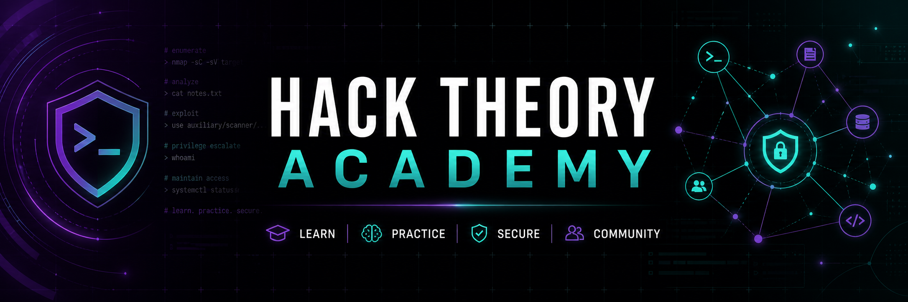

~/academy/catalog
From first command to defensible systems.
Every core course is free. Work through the modules, complete the listed labs only in systems you own or purpose-built training environments, then use quizzes and path screens to check your understanding.
Cybersecurity Foundations
Build a precise mental model of risk, identity, data, and incident handling.
- Threats and risk: assets, actors, attack surface, likelihood, and impact.
- Identity: MFA, sessions, least privilege, secrets, and recovery.
- Host and data defense: patching, backups, encryption, logging, and EDR.
- Incident workflow: preparation, detection, containment, eradication, recovery, lessons learned.
Lab: create a threat model for a small web service. Assessment: identify three controls and the detection evidence each should produce.
Networking and Packet Analysis
Understand what crosses the wire and how defenders reason from it.
- Models and addressing: Ethernet, IP, TCP/UDP, ports, subnetting, and routing.
- Core services: ARP, DNS, DHCP, HTTP, TLS, and NAT.
- Packet workflow: filters, flows, handshakes, timing, retransmission, and baselines.
- Detection: scans, beacons, unusual DNS, lateral movement, and encrypted-traffic metadata.
Lab: capture traffic from your own test client resolving and loading a local service. Assessment: annotate the DNS and TCP/TLS sequence.
Linux Command Line and Automation
Operate safely, make changes observable, and automate repeatable work.
- Shell fundamentals: paths, quoting, pipes, redirection, exit codes, and help pages.
- Files and processes: ownership, permissions, services, signals, logs, and resource use.
- Text and network tools: grep-style searching, structured output, SSH, curl, DNS, and sockets.
- Safe scripting: strict modes, input validation, temporary files, logging, testing, and rollback.
Lab: write a Bash health check for a local service that never prints secrets. Assessment: explain failure modes and safe retry behavior.
Secure Web and Software Engineering
Design frontend, backend, and delivery systems that fail safely.
- Trust boundaries: validation, encoding, authentication, authorization, and sessions.
- Data layer: parameterized queries, migration safety, encryption, and least-privilege service accounts.
- Browser security: CSP, cookies, CORS, CSRF, XSS, dependencies, and supply chain.
- Delivery: reviews, tests, secret scanning, SBOMs, staged deployment, telemetry, and rollback.
Lab: harden a deliberately vulnerable local demo app. Assessment: pair each fix with a regression test and observable alert.
Blue, Red, and Purple Team Operations
Practice authorized testing and detection improvement as one feedback loop.
- Blue: telemetry design, triage, timelines, containment, and detection engineering.
- Red: rules of engagement, safe emulation, evidence handling, stop conditions, and reporting.
- Purple: map tests to measurable objectives, compare evidence, tune, and retest.
- Communication: severity, uncertainty, mitigation owners, validation, and executive summaries.
Lab: run a benign authentication-failure simulation in a local lab. Assessment: produce a detection query, response checklist, and retest result.
/study-tip, answer scheduled quizzes, complete both /ctf-start labs, and use /path-screen. A passing screen creates a staff recommendation; it never grants trust or permissions automatically.